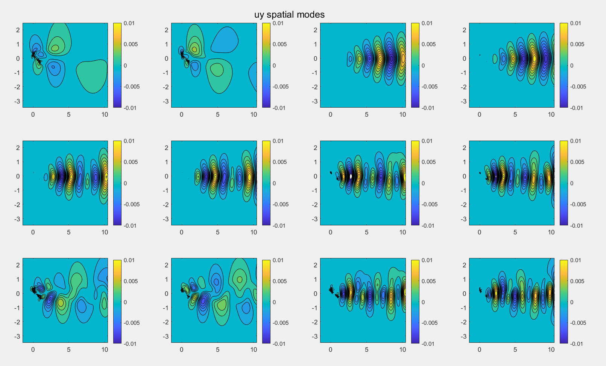
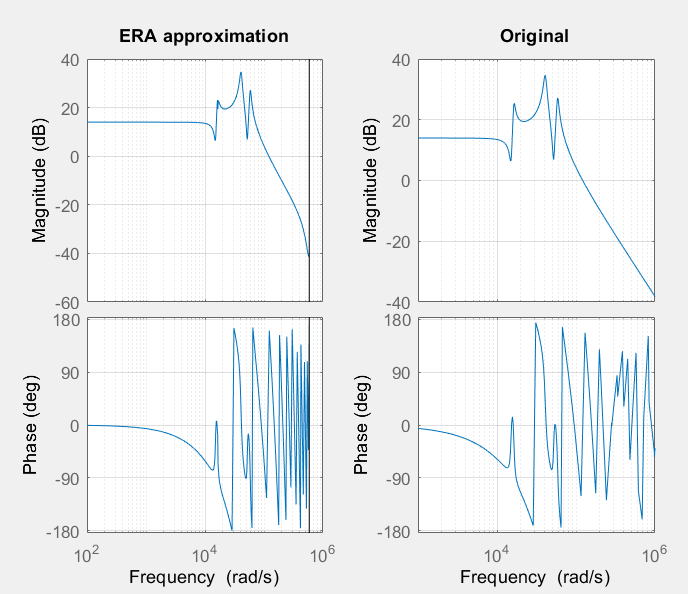

Controlling Data Driven Systems Using System Identification and Model Reduction
A Brief Synopsis
Under this project, data driven numerical methods are used to perform system identification and model reduction. The data sets used are subjected to basic linear algebra techniques such as Principle Component Analysis (PCA) and Singular Value Decomposition (SVD) for model reduction. This is followed by system id using methods such as Dynamic Mode Decomposition (DMD), Eigenanalysis Realization Algorithm (ERA), and Sparse Identification of Non Linear Dynamics (Sindy) to generate linear models for non-linear systems. Since the main goal is to design controllers for these systems, linear systems allow to construct controllers such as Linear Quadratic Controller (LQR) and Model Predictive Control (MPC). The datasets used consists of Flow over Airfoils, Flight Dynamics Datasets, and basic systems such as mass spring and inverted pendulum.
1. Using Singular Value Decomposition to recreate the fluid flow over an airfoil!
In order to understand the significance of Singular Value Decomposition, especially in the field of compression, a big dataset of flow velocities found here is subjected to the algorithm. Specifically, the dataset for airfoil with angle of attack of 25 degrees and frequency of 0.05 hz is used. The dataset itself (for both X and Y velocity) comes in a 3-D matrix, where the first two dimensions represent the velocity for individual snapshots in time. Accordingly, the third dimension contains the number of snapshots, which are 400 in total. Before performing SVD on the dataset, pre-processing is done in the following format:
- The 2-D grid of velocities is shaped into a single column vector.
- Individual snapshots are then horizontally stacked as column vectors. Accordingly, the final product is a big 2-D matrix where columns are snapshots of velocities at consecutive times.
- The 2-D grid of X and Y velocity is stacked vertically to make the analysis less repetetive.
- The mean of every column is subtracted, serving the purpose of normalizing the data.
Finally, the data is ready to be subjected to an economy SVD and the following matrices are derived: U, S, V. The matrix U contains information about the spatial modes while the product of S and V’ contains information about the temporal ampltiude of the corresponding modes in U. As expected, SVD figures out which pattern in the data summarizes it the best. A graphic of the eigenvalues (square of the singular values of the data) is show below.
The first 6 spatial modes which are basically the first 6 column vectors of U are shown below as well. Since the big data matrix contains both x and y velocities, it is important to remember that the top half of the matrix contains the x velocity and bottom half contains the y velocity.

The corresponding temporal amplitude for these modes is also shown below. As seen, the first 2 dominant modes follow a cyclic wave which are at an offset of a quarter wave.
Finally, the construction of the flows is performed by choosing a certain number of columns (<400). The mean subtracted from individual columns is added back to the columns selected for reconstruction and the columns are also shaped back to the grid format. By choosing which snapshot to view, a contour plot can be generated, as shown below for first snapshot or t = 1 sec.
Following is the video of the reconstruction of the flows can be found in the files attached in the repository.
2. Using Dynamic Mode Decomposition to recreate the fluid flow over an airfoil!
Dynamic mode decomposition tries to find the best fit “linear operator” which can predict the next state of the system. Consider ‘X’ to be the state of the system at time t=k and “X’” to be the state at k+1, then DMD finds the A that can satsify the equations listed below. By taking the inverse of X’, A can be determined.
\[ X' = A * X \]
\[ A = X' * X^{-1} \]
Since the matrix X is not always square, Singular Value Decomposition from above is used to find the pseudo-inverse. Equations below show expansion of the matrix X based on SVD and its inverse in terms of the individual matrix. Another important characteristic about DMD is that it finds a matrix called A tilda which is much smaller in size as compared to the original A but has the same eigenvalues. This decreases the computation cost by a lot.
\[ X = U * \Sigma * V* \]
\[ X' = A * U * \Sigma * V* \]
\[ A\sim = U * X' * V * \Sigma^{-1} = U* * A * U \]
Once A tilda is know, its eigenvalues (W) can be calculated which are same as A and then the eigenvectors of A which are labelled as phi can be determined through back calculation using lambda.
\[ A\sim * \lambda = \lambda * W \]
\[ \phi = X' * V * \Sigma^{-1} * \lambda \]
To perform a DMD on the same flow field, the velocities are stacked in a similar format as before to make the X matrix and the first column is deleted to make X’. The airfoil data used for this has an angle of attack of 25 degrees with freq of 0.05 Hz. Subjecting to DMD analysis, the amplitudes of the modes are derived and the plot is listed below:
Also, the contour plot for the first 4 modes along with their frequency is given below:
Finally, the reconstruction of the fluid flow is performed using the DMD Algorithm and the following the comparison: Following is the video of the fluid reconstruction using DMD and first 20 POD modes.
3. Using Sparse Identification of Non-Linear Dynamics (Sindy) to reconstruct mass-spring-damper model.
Sindy is a sparse identification technique to derive a linear combination of basis functions and reconstruct the data field. A simple mass-spring-damper system is subjected to Sindy and the spring and damper stiffness are back calculated from the coefficients given through Sindy. The parameters used are given below: k = 10 N/m, b = 20 N/(m^2 sec), and m = 1 kg. The original differential equation is stated as follows. Moreover, a sinusoidal force is applied to the system and the position and velocity are recorded.
\[ \ddot(x) = \frac{F(t)}{m} - b\dot(x) - kx \]
The data collected is subjected to Sindy and the sparsification know is adjusted to get the correct sparse model. The basis functions used are: {1, x, x_dot, u, x^2, x_dot^2, u^2}. The results of this tuning are given below. Using lambda = 0.01, the following coefficients are determined.
4. Eigensystem Realization Algorithm (ERA)
ERA is a data based analysis of a system which is capable of determining the discrete state space matrices: A, B, & C using the impulse response. Accordingly, the the system can be described as follows:
\[ x_\text{k+1} = A_d x_k + B_d u_k \]
\[ y_k = C_d x_k \]
\[ u_k = \delta(t) \]
By writing out the response of the system with initial conditions to be 0, the output can be characteristed by
\[ y_k = C_d A_d ^ {k-1}B_d \]
Following this the Henkel matrices -H and H’ - are generated and the SVD is taken to convert the model from high to low dimensional model. A, B, and C matrices are generated using the following:
\[ SVD(H) = U \sigma V^{*} \]
\[ A = \sigma^{-.5} U^{T} H' V \sigma^{.5} \]
\[ B = \sigma^{.5} U^{T} H \]
\[ C = H V \sigma^{.5} \]
To understand this approximation, ERA is tried on the transfer function decribing the Atomic Force Microscope. The corresponding transfer function is given below:
\[ G = \frac{kw_2^2w_3^2w_5^2(s^2+2\zeta_1w_1s+w1^2)(s^2+2\zeta_4w_4s+w_4^2)exp(-s\tau)}{w_1^2w_4^2(s^2 + 2\zeta_2w_2s + w_2^2)(s^2 + 2\zeta_3w_3s + w_3^2)(s^2 + 2\zeta_5w_5s + w_5^2)} \]
The impulse response of the system is determined (also shown below) and hankel matrices are generated.
After determining the discrete A,B,C matrices, the bode plots are generated from the ERA esimtation and actual transfer function. The results are shown below. 
To see the effects of the addition of the white to the system, random normal gaussian noise is added to the impulse response and subjected to the ERA estimation. Surprisingly, the noise does not decrease the accuracy of the estimation; only does at high frequency. This makes sense because by taking SVD of the hankel matrix, the low energy pod modes are neglected which contain the noise. The results of the addition of white noise to the system are shown below:
5. Supporting files
To access the code, check out the github